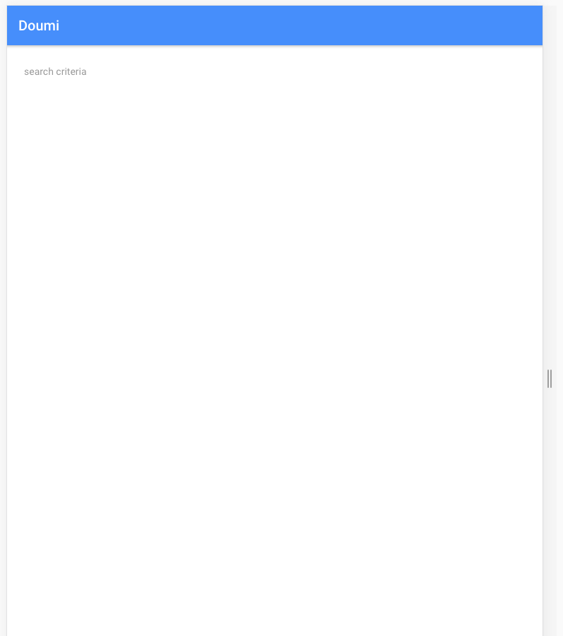
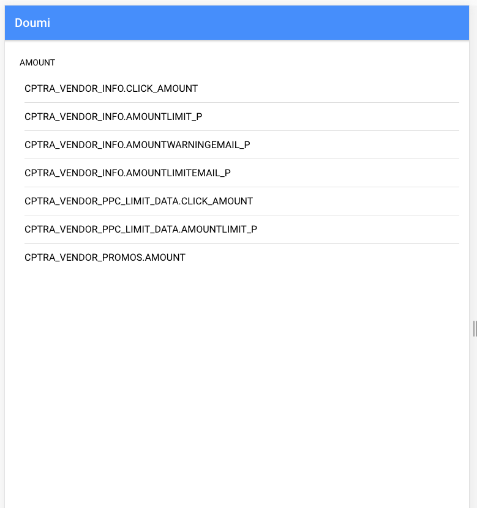
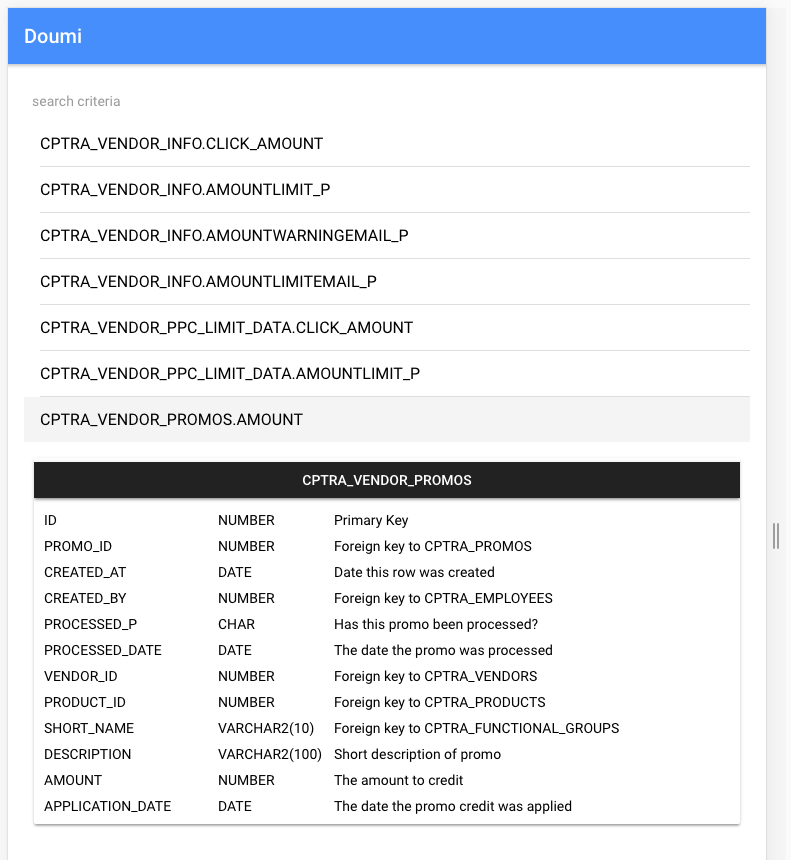
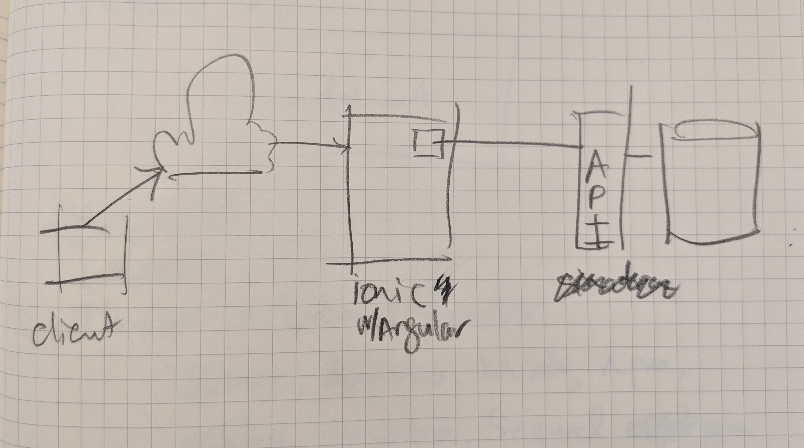
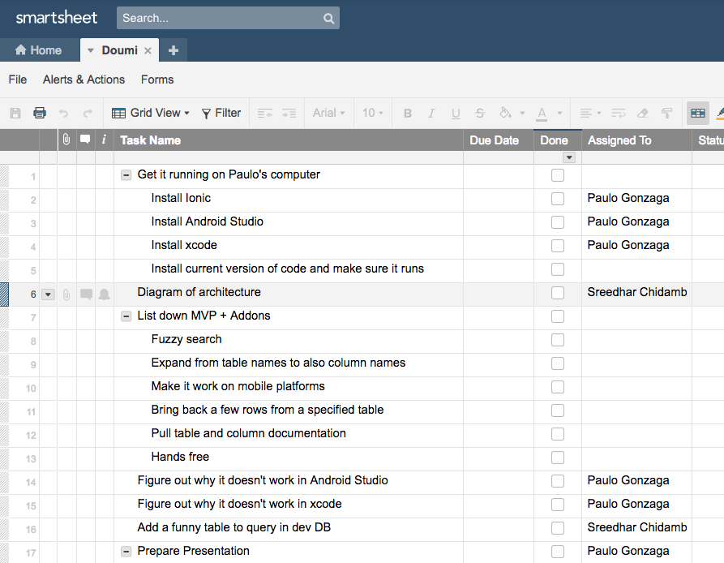

"Architect, what does X table/column do in the DB?"
"Developer, what is the datatype of X column?"
"DBA, can we add X to the DB?"
Problem
We often can't answer those questions without hopping into the database with our laptop which may not be with us at that moment.
What if we could answer those questions
using any device,wherever we want(like in meetings or during development),with mininal input?
DOUMI
Korean word for "Helper"
(Thank you, Seung!)
DOUMI Benefits
Fuzzy search for DB objects
Displays table structures
Pulls sample data
Provides DB Object Documentation
Runs on laptops and smartphones
Mockups



Architecture

Ionic - Hybrid framework that allows us to target desktop, android, and iOs!"Use any device"
Angular - "Minimize input"using components
API Abstraction - "Use any where"over HTTPS
Methodology
Design and Planning

Install and Learn Tools
Ionic, angular, Node, npm, Ruby, Sinatra, Sequel
Build MVP Style
How far did we get? What's Next?
Nearly Complete - Fuzzy search for DB objects
Complete - Displays table structures
Partial Completion - Pulls sample data
Partial Completion - Provides DB Object Documentation
Partial Completion - Runs on laptops and smartphones